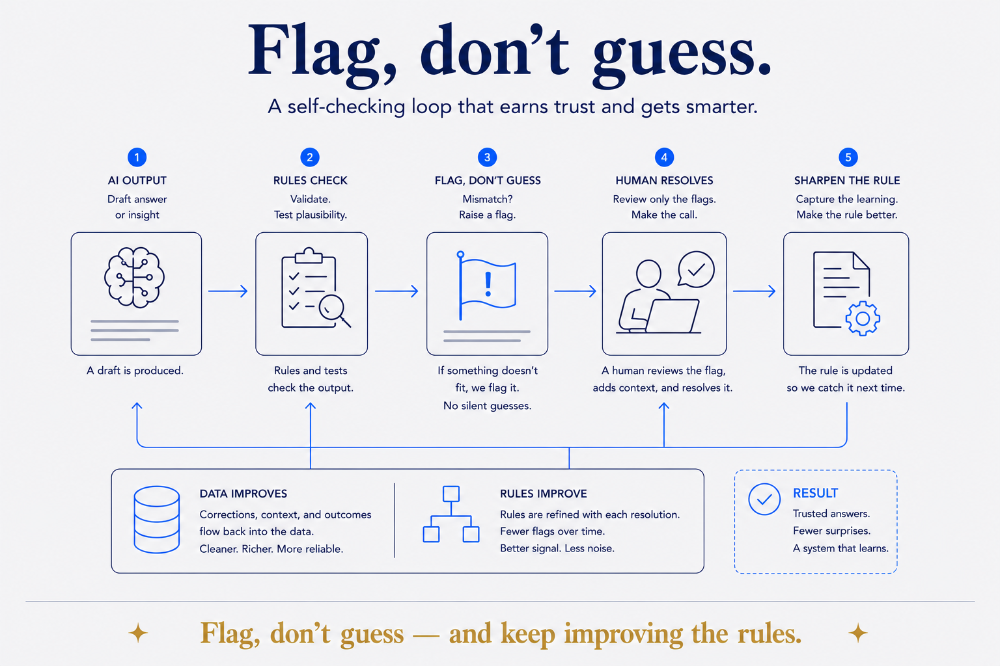

Generate → validate → flag, don't guess → improve — and improve the checks too.

A loop where rules check the output, the system flags rather than guesses, and the checks themselves get reviewed and improved over time.
The load-bearing word is flag. An AI asked to be helpful will fill a gap with something plausible; a system with rules asks a different question — does this hold? — and when the answer is no, it raises a flag instead of inventing an answer. Silent plausibility is the failure mode that costs you; a flag is cheap. Never guess where you could flag.
The second loop is the part almost everyone leaves out. A human doesn't review everything the machine touched — that doesn't scale and stops being review after a week. The human reviews the flags. And when something slips through, you don't just fix the value; you sharpen the rule that missed it. So two things improve at once: the data gets cleaner, and the checks that guard it get better. That's the difference between a checking step and a system that learns.
It's also where the human stays in the loop by design rather than by discipline. You're not rubber-stamping output — you're steering at the one point where judgement is actually required, and encoding that judgement so it holds next time.